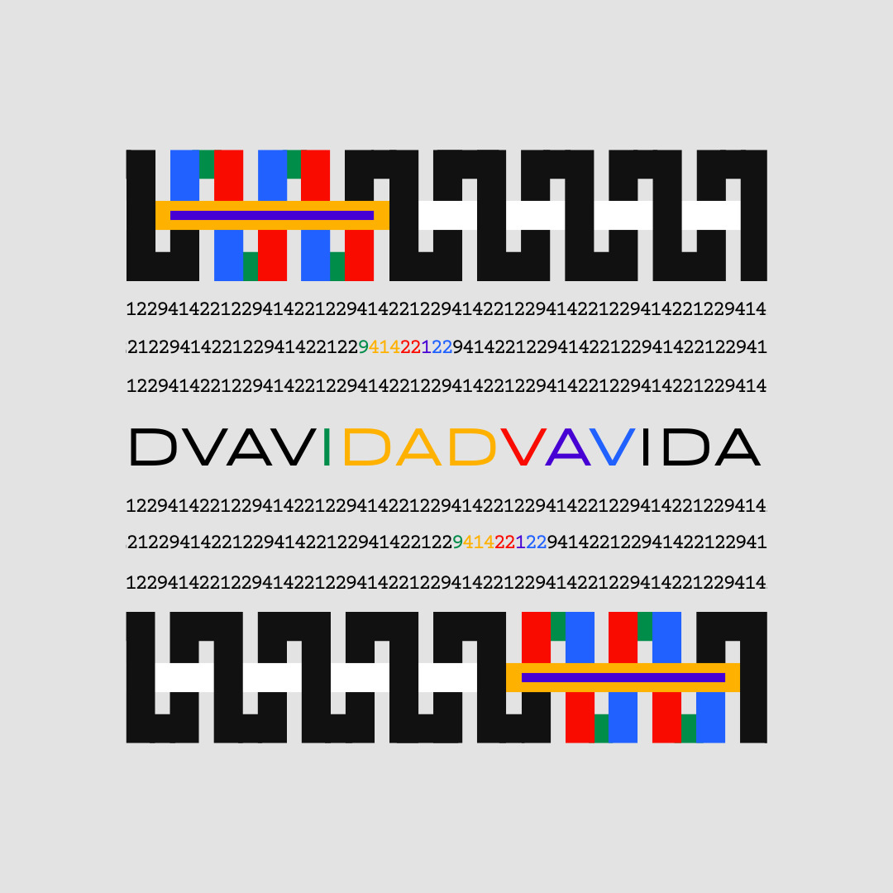
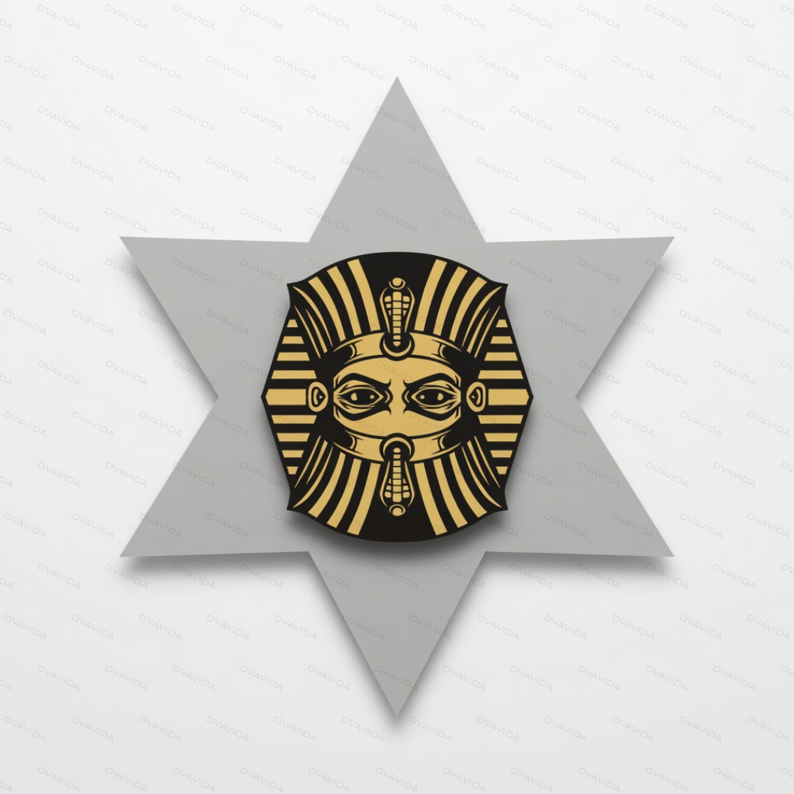
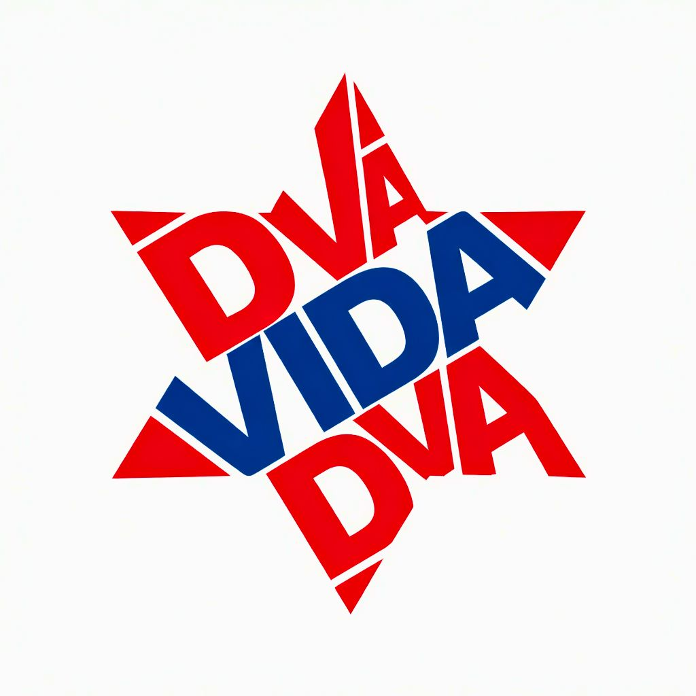

DVAVIDA - Binary World | Explore the Real Duality
Two Kinds of 11 — Binary World
Six-pointed star of DVAVIDA | Hexagram. DVAVIDA meaning explained: Two Kinds 11(69).

Everything around – an endless cycle '69': Creation, Transition, and Rebirth.
No hidden meaning. No fantasy. No aliens. MONOLITH (Space Odyssey) is The Street.
DVAVIDA: Two Summers / Dva Leta - Two kinds astronomical events occur along the same street in perspective.

Pharaoh statues are not mystical kings, they are astronomical devices for determining the sun's trajectory. The true name is FARAON - the lamp is on.
The Letter 'M' It is the very first natural sound produced by a newborn’s vocal cords immediately after birth.
Masonic / Freemasonry Square and Compasses not for drafting or drawing — it is a myph.

HEXAGRAM: Six-pointed star of DVAVIDA - Two Kinds. Two Lives. Two Forms. Two Versions.